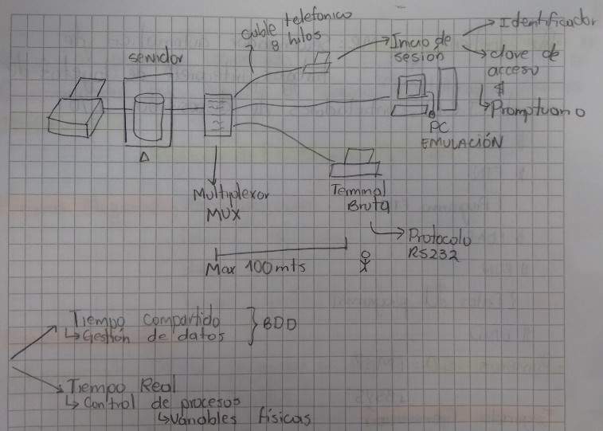
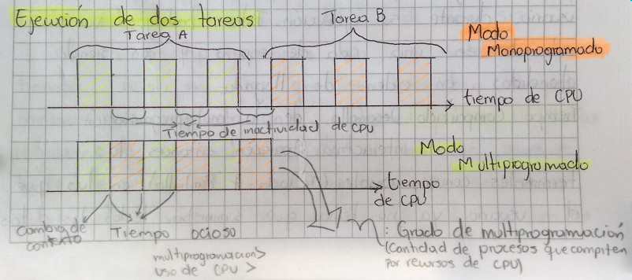

Tercera Generación: La Multiprogramación

Es un modo de trabajo en el que se pueden ejecutar varios programas simultáneamente con el fin de aprovechar al máximo los recursos del computador. Surgió ante la imposibilidad de los sistemas anteriores de ocupar durante todo el tiempo totalmente el procesador y los dispositivos I/O. Existen dos tipos de trabajos que limitan la utilización de los recursos del computador.
Trabajos Limitados Por Proceso: Aquellos que consumen la mayor parte del tiempo en el tratamiento de información y muy poco en operaciones de I/O.
Trabajos Limitados Por Operaciones I/O: Aquellos que dedican la mayor parte de su tiempo en operaciones de I/O haciendo poco uso del procesador, el cual se mantiene inactivo durante grandes periodos de tiempo.
En este ultimo tipo de trabajo el que precisamente de origen a la multiprogramación que consiste en aprovechar la inactividad del procesador durante la ejecución de una operación I/O de un proceso en atender a otro proceso. Desde el puno de vista del usuario se considera que los procesos se están realizando en paralelo, aunque en el momento solo se atiende a uno de ellos.
Ejecución De Dos Tareas

El sistema multiprogramado trae algunos problemas:
- El acceso del procesador debe seguir un tipo de regla que permita la ejecución de todos los trabajos.
- Se requiere una buena administración de las memoria, puesto que esta tiene que ser compartida por todos los trabajos.
- Varios trabajos pueden necesitar simultáneamente de un recurso, dando lugar a problemas de concurrencia.
Con el proceso de plantear el procesamiento se crea una estructura de Nucleo
Central (Kernel) compuesta por rutinas para gestión de memoria central, el
procesador y los dispositivos I/O.
Algunas aplicaciones de este tipo de administración son:
- Proceso en lotes (Batch): Actividad en sistemas multiprogramados para ejecutar procesos largos que no requiere intervención del usuario durante su ejecución. Tales trabajos van entrando en una cola de espera y van siendo atendidos en orden de llegada.
- Tiempo compartido:
Desarrollo de la multiprogramación interactiva. Aparecen entonces las
terminales conversacionales (teclado + pantalla) en las que en usuario ya no
tenia que suministrar todos los datos al principio de la ejecución del
proceso, si no suministrarlos al momento que el proceso los va necesitando.
De igual manera ir recibiendo respuesta inmediata a sus datos.
En este momento de trabajo aparece el concepto de sesión. Durante estas sesiones pueden realizar multitud de operaciones controladas por un proceso (Interprete De Comandos) que mantiene el dialogo entre el usuario y el S.O durante la sesión el usuario cree tener a su disposición todos los recursos del computador aunque existen otros usuarios con sus sesiones activas.
Características:- Muy conversacionales.
- Atienden a varios usuarios simultáneamente.
- Buenos tiempos de respuesta.
- Excelente gestión de archivos.
- Utiliza técnicas de buffering y spooling.
- Administra memoria virtual.
- Tiempo Real:
La tercera modalidad de los S.O multiprogramados son los sistemas de tiempo
real, en los que se necesitan tiempos mínimos de respuesta ante cualquier
petición.
Utilizados regularmente en sistemas de control con sensores donde se requiere una respuesta casi inmediata sobre el sistema a controlar (variables físicas). De ahí su nombre, trabajan en tiempo real por lo que permiten controlar y regular el medio sobre el que operan.
Características:- Respuestas en tiempos mínimos.
- Información actualizada y permanente.
- El sistema permanece inactivo presentado disponibilidad para atender eventos.
- Manejo eficaz de interrupciones.
- Manejo sencillo de prioridades.
- Administra memoria real.